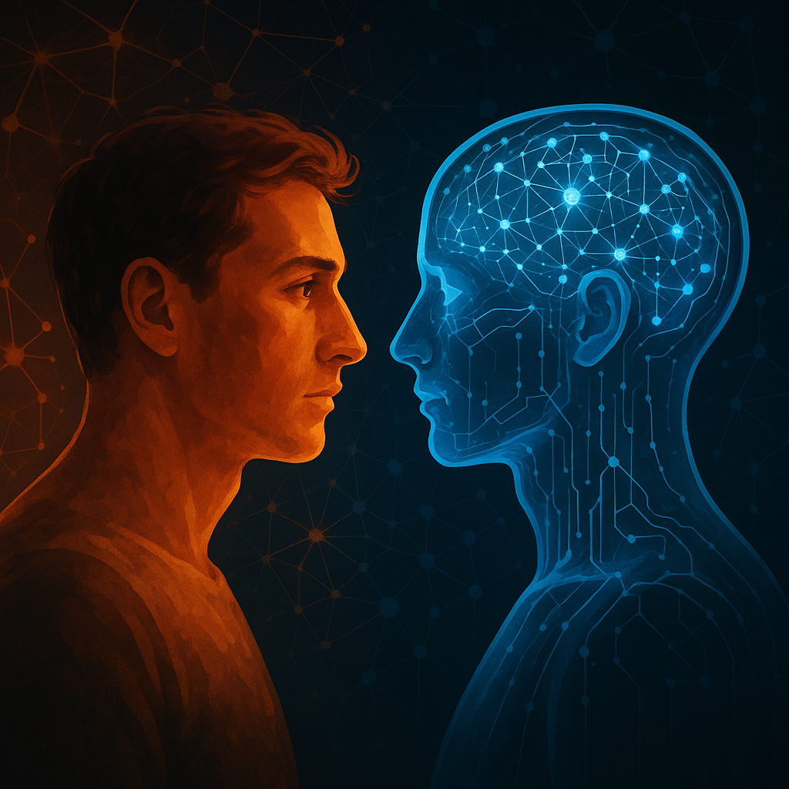
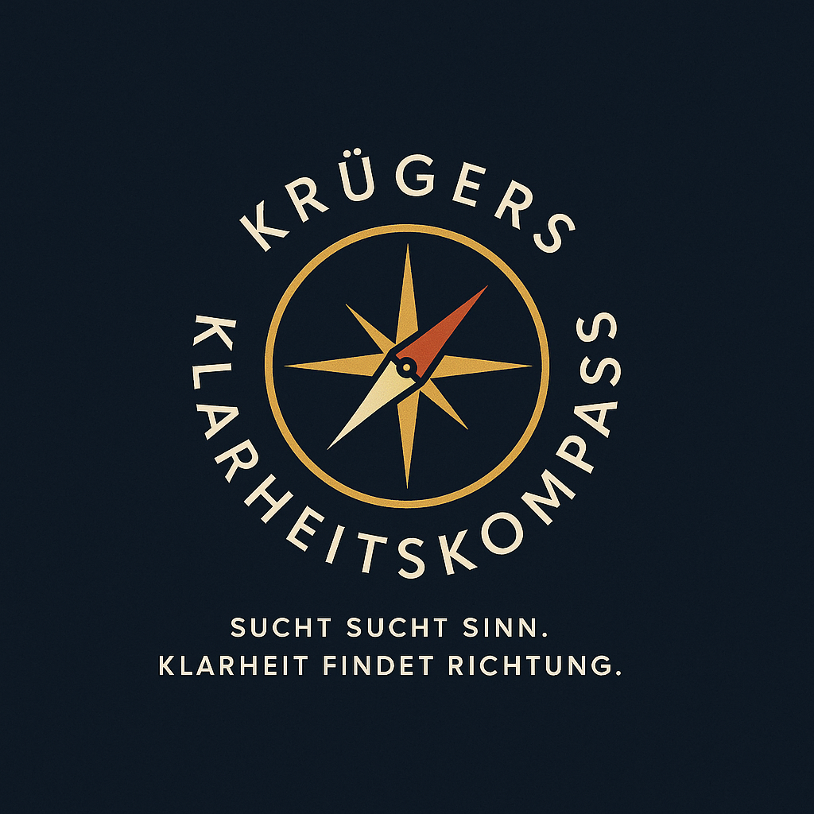
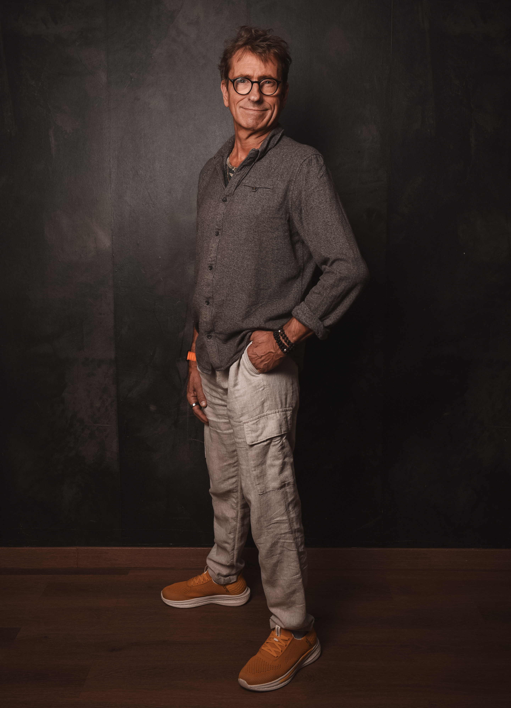

N.O.R.A. – Bedeutung
Neuro-orientiert · Orientiert · Reflexiv · Ausgerichtet
N.O.R.A. ist mein neuro-orientiertes Reflexionssystem. Sie rechnet Muster, bringt Struktur, macht Optionen sichtbar. Verantwortung bleibt menschlich.

Was KI nicht kann – und nicht soll
- Keine Gefühle: Empathie, Reue, Liebe – bleiben menschlich.
- Keine Verantwortung: Entscheiden muss der Mensch.
- Keine Ethik von sich aus: Werte müssen wir definieren.
- Keine Abhängigkeit: KI ist Werkzeug, nicht Gewissen.

Warum KI für mich unverzichtbar ist
Als Coach, Mentor und Trainer nutze ich KI, weil sie Gedanken strukturiert, Komplexität verdichtet, Modelle sichtbar macht und Dokumentation erleichtert.

Neues Berufsbild: Coaching im KI-Zeitalter
Ab Mitte 2026 bin ich zertifiziert, Menschen auszubilden, KI ethisch sauber, werteorientiert und kompetent zu nutzen.

Die Zukunft mit KI: Metamoderne & VUCA
Wir stehen vor einer Revolution. KI verändert Arbeit, Bildung, Beziehungen, Sinn. Wir müssen lernen, die Welle zu surfen.
VUCA: Volatility, Uncertainty, Complexity, Ambiguity.
